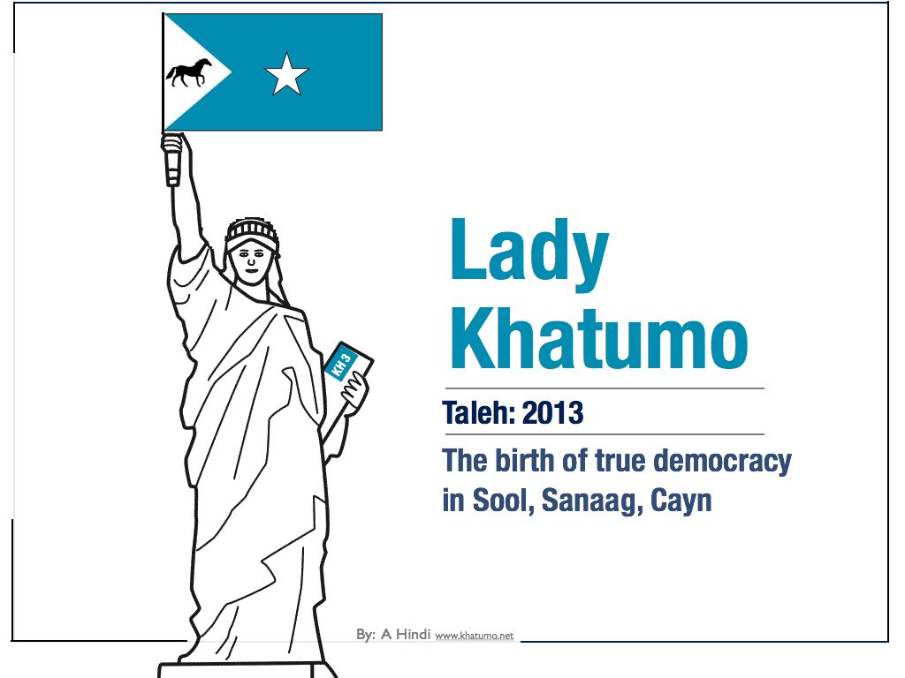
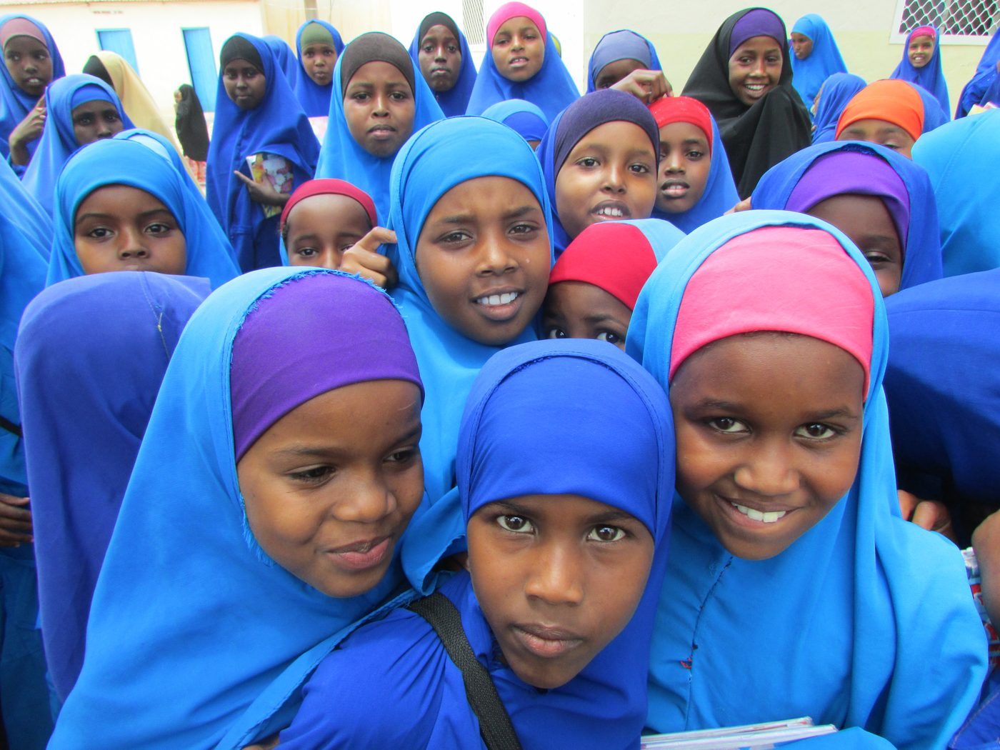
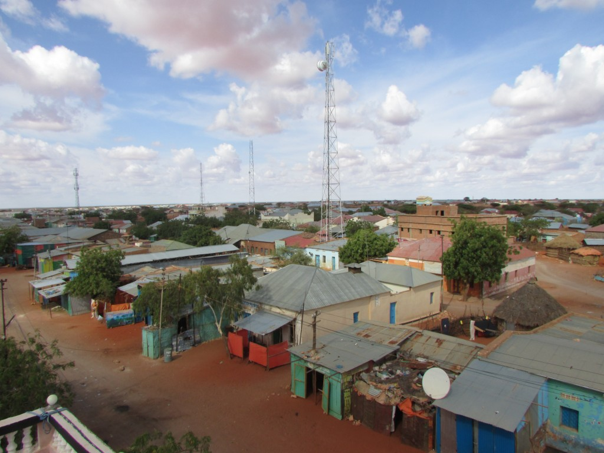
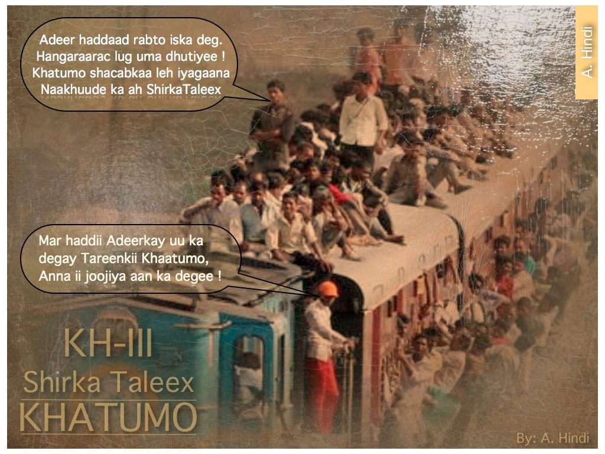
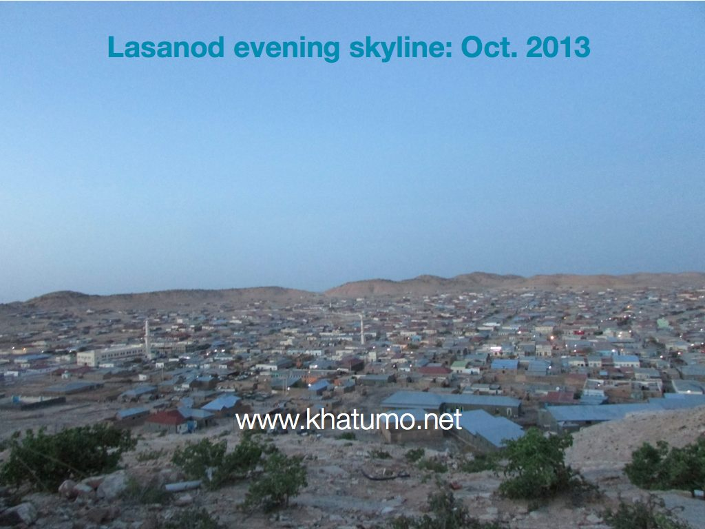
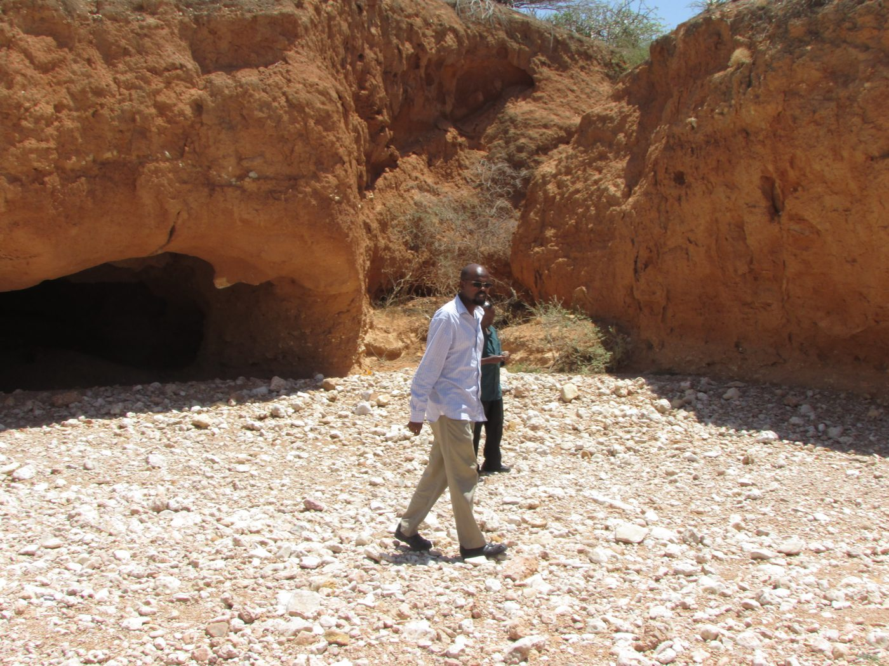
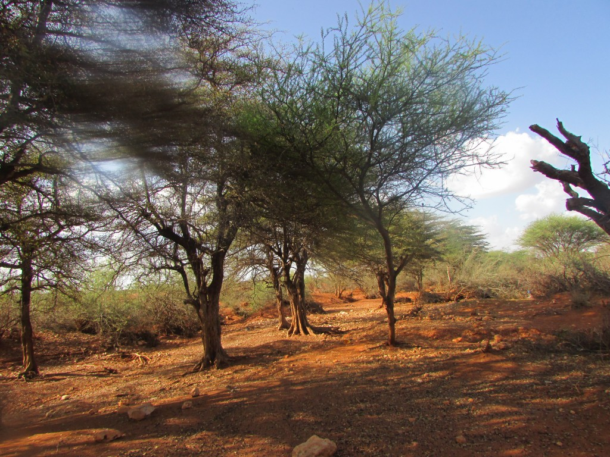
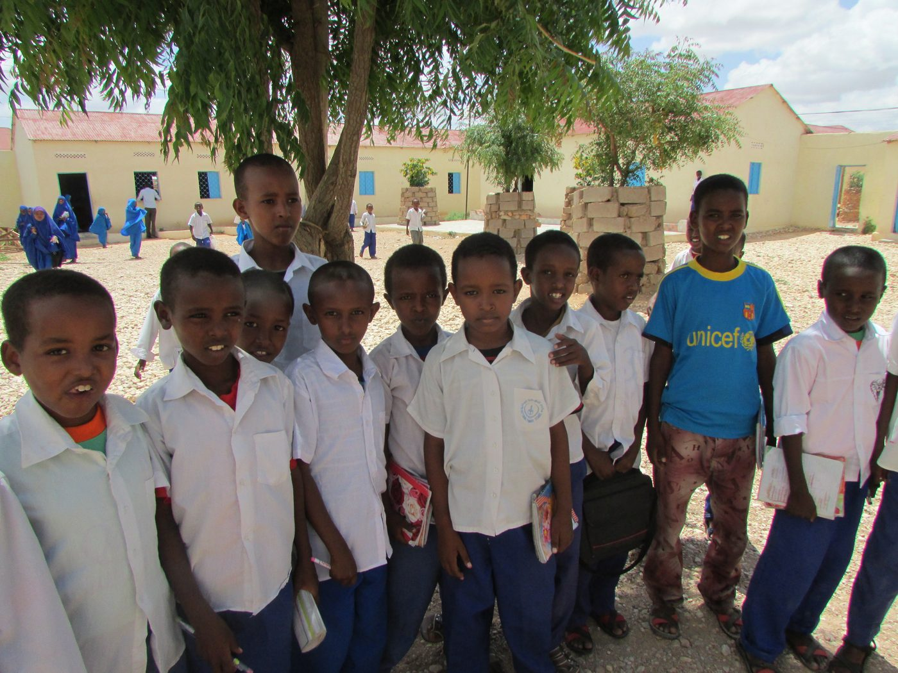
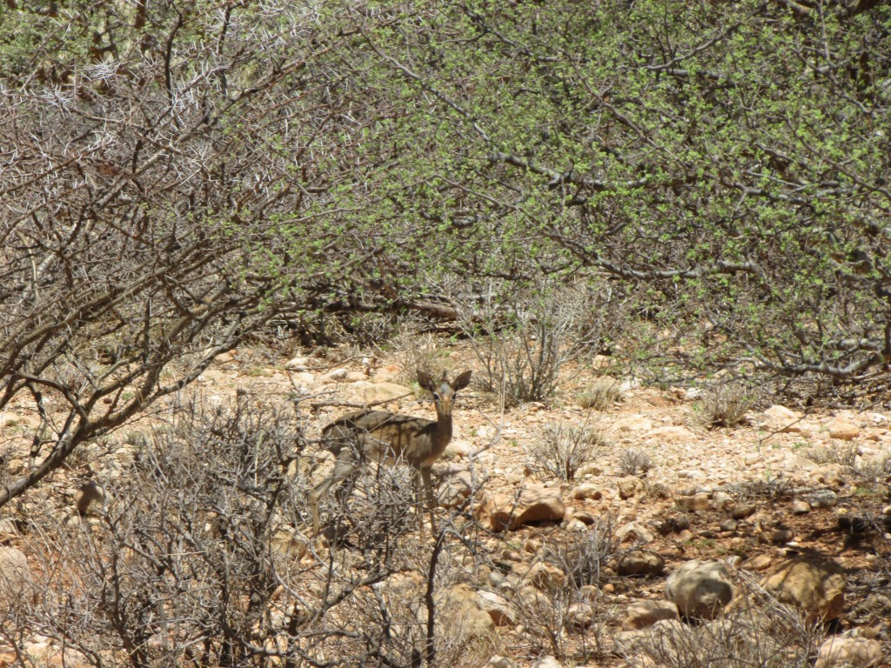

khatumo.net archive
Lady Khatumo Wins the final “Battle of the Balls”
By A. Hindi
April 6, 2014

Khatumo State of Somalia
It is 5:00 pm on a Friday afternoon. Work at the office never finishes eh! But after a long commute, you arrive home and eat your usual spaghetti dinner. You made sure you had a good grip on your cup of fresh Coffee before collapsing on your sofa. One glance at the television and it is Chelsea vs. Arsenal soccer match. “There is something oddly different about this ball game though… you wondered, as you gobbled up larger and faster sips of your Khatumo Coffee…
Suddenly, instead of competition between two teams, you found yourself watching three teams consisting of the tripartite Traditional, Presidential and Executive Councils of Khatumo State, all converged in the midst of this large football stadium, flexing their muscles as they got ready to play the Khatumo ball-game. Oblivious to the absence of a Referee and even goal posts, each group hurries to kick the ball towards the direction each imagines to be the goal; up, down, right, left, loops, free kicks, it is open season.
Nevertheless, the large crowd of khatumites keeps cheering anytime they see beautiful ball movements. But as the game progresses, occasionally, a ball would hit a player in the Balls. “Stop the game”, yells the fellow from the 3rd row. “My uncle in team Presidential has been kicked… you know, below the belt. I am sure that is a foul. A penalty is due. “What about my man in team Traditional which during the first half was also wronged when he passed the ball East towards Garowe” yells another fan from the 2nd row. Meanwhile, burdened by a sense of responsibility to continue the game, team Executive keeps kicking the ball to any direction other than East or West.
“So you are saying that all those games played over the past two years, the fans have been refereeing the Khatumo ball-games! ” Said this mysterious voice from behind. “There’s gotta be a Referee, you know, an authority to refer to whenever we need to settle our disputes or need guidance towards the right direction” continued the voice.

Kalabaydh Elementary School (November 2013)
By the way… are women allowed to play the Khatumo Ball-game? Asked the voice again “Yes”, you replied. “But they are limited to a few insignificant posts, like catching a stray ball here and there you know. “So, we are watching a political game between a few individuals whose common denominator is the fact that they are all men and old” said the voice which by now seemed like that of a Lady.
“Well, I would not be that unkind, but that is kind of true” You finally conceded.
“So who is that player with the number 5 T-shirt” asked the lady, pointing her fingers at team Presidential.
“Oh, that is my uncle, you answered with pride. “He defends and leads this team so well… doesn’t he… He is a brave man with two Balls [Geesi laba xiniinyood-a]” you continued to brag?
“So he must be a tough and strong fellow. Said the Lady.
“What do you mean by a strong fellow? You questioned
“You know… strong leaders who do not rely on sub-clannish sentiment supports, and outdated artificial Presidential titles as a source of strength to disrupt their People’s games and thus wishes” whispered the Lady.

Rainy season in Cayn region (Buhodle November, 2013)
“How do you measure the strength of tough old fellows who can’t get along? You continued.
“Certainly not by the size of their balls”, said the lady as she giggled
“Cause the older their [balls] are, the less productive they become” Continued the Lady.
“You mean the less re-productive they become”. You said as you remembered you Grade 7 Biology.
“Perhaps that too” genuinely laughed the Lady this time, perhaps appearing to concede that she was outscored on this one.
“The people’s right to assemble freely in their hometown. Their right to debate, discuss, and deliberate directions of their local affairs should be a sacred duty. No rational person would disrupt such a peaceful gathering. Travelling from Lasanod were the same Khatumo Ladies whose flowers were accepted last year but somehow they had to be bullied and beaten up this year, preventing their democratic right to participate in Khatumo III. Truly, The people of Khatumo never changed their allegiance to their administration. So, what has changed ! Clearly, the current political paralysis hovering over Khatumo revolves around petty gripes between two parties; you know… He said this about you and he said that about you; meaningless personal grievances and gossip triangulated by a third party”.

“So what’s the big deal if I said something as a joke and you found it offensive”. Wouldn’t you dismiss that as a non-issue” exclaimed the lady again. “Perhaps, yes. But only, if it were up to me, See… anytime you utter public statements/jokes or take little jabs at an individual, you also have to deal with all sub-clans of that person who _according to tradition _would also appear to have been wronged; feeling entitled to damages by way of generalization” you wrongfully reasoned. See… most wars and conflicts in the world are about resources and land. In this case, neither party caused each other any physical damage, no issues of land dispute either… as Somaliland and Puntland have already wolfed up their Lands albeit Buhodle city where the flames of Freedom are too hot to be extinguished. See…No big disputes between these two brothers safe for a mere perception of foul mouth”.
“So the faith of nearly a million khatumites is stalled because a few old men cannot settle issues of bad-mouth; a few old men erroneously engaged in a waiting game of who blinks first, who has the softer Balls, who is more arrogant and naively willing to go to their graveyard along with a Khatumo they never truly owned” strongly argued the Lady again.
The fundamental question of who funds the Khatumo machinery should decide its eventual ownership _thus putting the ball back in the corner of WE THE PEOPLE. To all the fans, this time, before we start kicking the ball haphazardly, we should help to select Khatumo folks who are trained to hypothesize not only external threats but also internal challenges. They should agree on how to resolve problems ahead of their occurrence; emphasizing concepts of teamwork and collaboration; and putting in place mechanism and resolutions that anticipate critical questions like: What if a Presidential team member/s disagrees with an Executive Council member?

Individually, khatumo folks are successful business leaders some of whom: multi-millionaires, some with world class education and credentials, but somehow at the group level, they fail to achieve bigger things. However, there is hope… as you were assured that disagreements and misunderstandings were a normal stage through which any group formation passes. See Khatumo has already gone through the Storming, and Norming, stages, and come Khatumo III, they will be at the Performing stage where members become more mature and political compromises will be the name of the ball game.
Many in the Khatumo Diaspora have earned so many foreign Degrees that are yet to be truly utilized. What good is an education that cannot be used to put bread on the table, cure simple diseases chronically suffered by your people or even establish local governments Led by leaders with moral authority.
“Speaking of who is the stronger Leader among them, aren’t you as strong as your weakest link” asked the Lady.
“What do you mean by _your weakest link”, you asked
See… In Khatumo Country, thousands of people cope life without basic necessities; no clean drinking water, no medical Clinics. Not enough to eat, Add this to bickering among the governing old fellows and Life becomes even more unbearable. As a true leader, you should exhibit courage and humility; you should measur your strength not by the number of Military tanks staged and showcased, but by the number of health clinics you helped to build, the number of people you have inspired and engaged to lift out of poverty, the number of people whose trust you have earned, the number of projects you have successfully executed.

Khatumo Grand Canyon (Lasanod Nov. 2013)
A leader helps to facilitate the issue of why the Medical Practitioner allegedly sent from WHO to serve the people of this Khatumo City has not shown up for the past two years. Why the FM Radio Station unit sent from Mogadishu hasn’t been activated in Taleh. It requires the strength of a true Leader to have achieved all of the above goals and milestones. A true leader does not dwell on socially constructed Traditional titles, internalizing them as God-given personal entitlements. Now… there is a worthy cause with which one could flex one’s Presidential muscles or Traditional brains.
“Wait… is there any women among the Khatumo Traditional team” asked the Lady again”. “Well… Ahh! I don’t think so” You hesitated. “See In Khatumo land we keep things the old way… respecting the Traditional elders”
“ I will give my respects when Queen Elizabeth of England dictates policy directions to its Parliament and Prime Minister “concluded the lady.

Beautiful lanscape in Khatumo Country_ near Taleh (Nov. 2013)
Bullying armies from Burco and Bosaso may bring with them bigger bombs and bazookas But [oh Taleh] You should know that your people’s belief in you is priceless; When kids in kalabaydh and kalshaale colour their school walls with the blessed Kalimahs, of Khatumo and the cool words of SSC, you should know that the enemy’s days are numbered. Nothing can defeat the will of a modern Dervish dedicated to live in liberty and freedom. Clear of clannish thinking that often clouds the thoughts of even the learned, this new breed of khatumo Champions dared to imagine a Taleh that enhances its rich history with new high-rises and quality health services.

Badbaado Primary- Khatumo State (Nov. 2013)
Once again, Sitting quietly on the high rows of the stadium, You found yourself back in a new Khatumo Ball-game. It is at this time that you thought you heard that familiar voice again.
“Ohh! These Leaders…disappoint me… the more khatumo men play the Balls game, the less Khatumo there will be. Unless we can find an alternative” She said with a scream.
“What alternative” you wondered.
“You know… An Arraweelo that can snatch the Balls out of Khatumo men, perhaps only then could we perfect the Dervish State” said the Lady.
Bewildered at the scary thoughts that this Lady might actually be the Arrawello Somali legend, you did not know whether to crisscross you legs for cover or Man up and stay strong like a Leader with two Balls. _the more you thought about this lady, the less inflated your balls became…

Wildlife in Khatumo State ( November 2013)
“Ahhh! Ah! But excuse me… who would you suggest to referee the next Khatumo Ball-game” You interrupted the lady as you tried to change the subject. Before she answered, you wondered if you should ask: who is this Referee, what is his name… or should I ask what is [her] name?
“It is not even a person… You fool” exclaimed the lady.
“Then what is it? ” You yelled this time… appearing to have gained a bit of your balls inflated again.
“Drafting a Constitution_ will be your Referee to refer to whenever you are in doubt or need help in troubleshooting conflicts… for starters, you may need to start with the Article that Khatumo is premised on the fact that it is neither Somaliland nor Puntland” Concluded the Lady.
“We need to listen and pay special attention to the wishes and aspiration of Khatumo civil society led by Guuto 1aad_ Just like the statue of Lady Liberty overlooking the skies of New York, soon, standing tall and proud by the Fig tree in Taleh Square, Ladies and Gentlemen, help me_ for your own safety_ in welcoming to the Khatumo podium: Lady Khatumo III.
Miracles of Khatumo continues…
Until the next Ball game!
A. Hindi. [Email: admin@khatumo.net]
This article may not be copied or reproduced without the written consent of www.khatumo.net except if you are a member of Khatumo Journalists Association (KHAJA) in which case you have full permission.